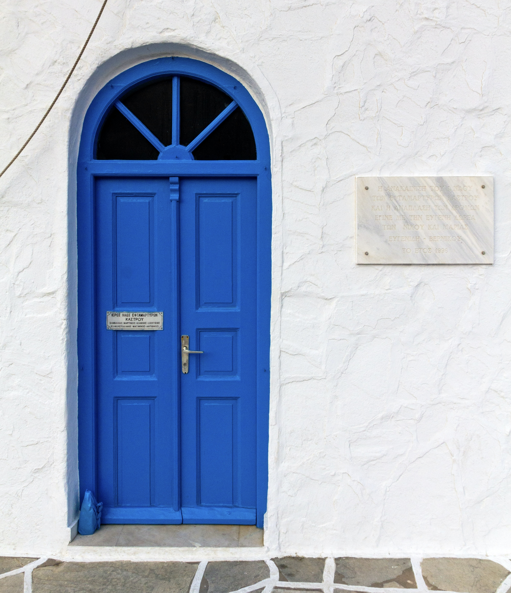
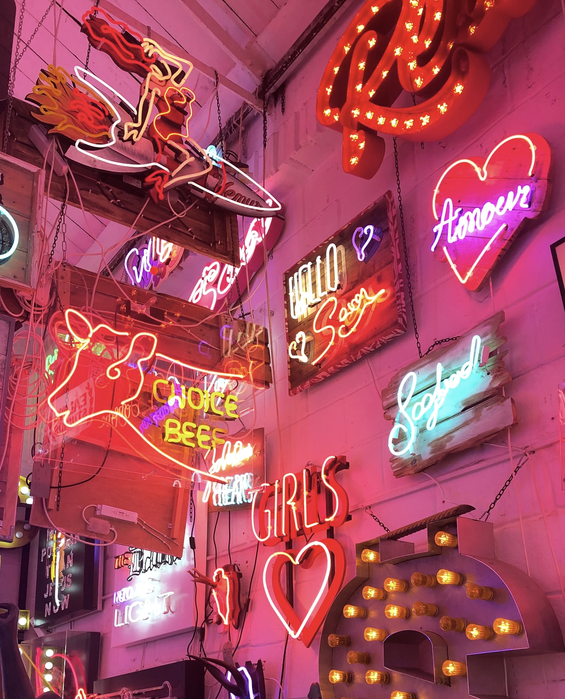
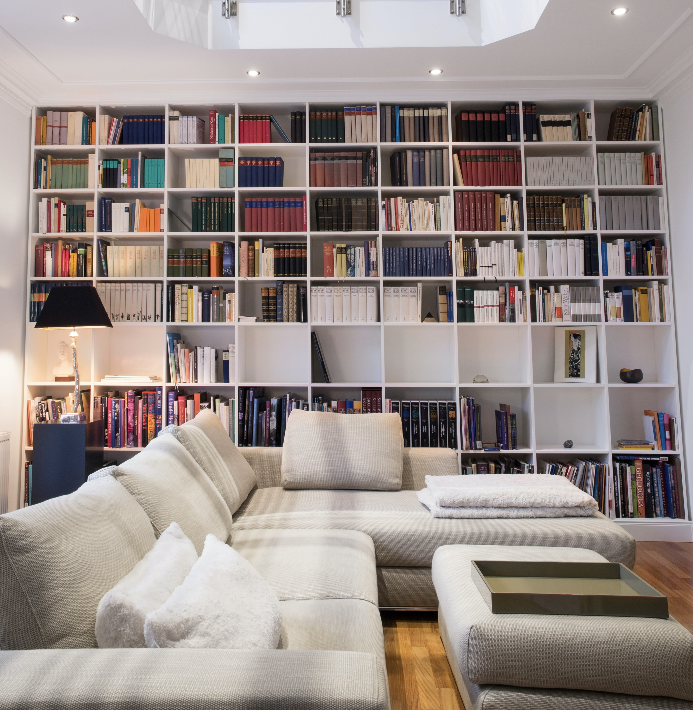

Einige Möbelstücke oder Dekorationsartikel eignen sich besonders gut, um dem eigenen Zu Hause mehr Persönlichkeit und Charme zu verleihen. Mit nur ein paar Handgriffen und auch für kleines Geld, kann man viel bewirken.
Nachfolgend sind ein paar Vorschläge, welche "Pieces" sich gut eignen um die eigenen vier Wände etwas aufzuwerten:
Farbige oder gemusterte Tapeten sind ein echter Hungucker! Fototapeten können Räume optisch vergrößern und ein Raumgefühl erschaffen.
Große Sofas schaffen eine Gemütlichkeit im Raum und laden zum Entspannen ein. Außerdem sind sie ein Hingucker im Raum und können sich gut als nützliches Raumelement integrieren lassen.
Außergewöhnliche große Vasen und Deckosäulen können leere Ecken aufwerten. Vor allem der Einsatz von Vasen sind richtige Hingucker und können Tische oder Sideboards aufwerten. Ob leer, mit Ästen oder mit bunten Blumen verleihen sie dem Raum das gewisse Extra!
Große Bilder verleihen Gemütlichkeit und liefern eine Message. Sie helfen einzelne Abteile eines Raums zu strukturieren. Nicht nur an der Wand, sondern auch am Boden können sie überzeugen.

Bunte Türen oder Türrahmen sind nicht für Jedermann eine Option. Sie können jedoch einen Raum aufwerten und ein kleines Highlight sein. Besonders im Süden und in warem Ländern sind bunte Türen gang und gäbe.
Deckenlampen und Licht allgmein schafft eine gewisse Atmosphäre im Raum und Gemütlichkeit. Ob schlicht oder ausgefallen ist Geschmackssache. Jedoch sind Lampen ein Muss für jedes Zu Hause.
Bilder, Fotos oder Fotowände sind schöne Alternativen zu einer kahlen Wand. Dabei können abstrakte Bilder, Zeichnungen oder Erinnerungen aus dem Leben verwendet werden. Alles was man gerne sieht oder einem wichtig ist kann eingerahmt werden.

Neon Lichter, -Tafeln oder -Schriftzüge verleihen einem Raum ein besonderes Licht. Meist sind diese Lichter bunt und rücken den entsprechenden Raum in ein ganz "neues Licht"
Ein großes gemütliches Bett und ein gut strukturiertes und aufgeräumtes Schlafzimmer verhelfen zu einem guten Schalf. Fast die Hälfte unserer Lebenzeit verbringen wir mit schlafen und aus diesem Grund sollte dies auch bedacht gestaltet werden. Denn wer besser schläft, hat auch mehr Energie für den Tag!

Bücher-Wände und Lese-Ecken sind nicht nur ein echter Hingucker, sondern sagen auch viel über die Persönlichkeit und die Interessen eines Menschen aus. Wer viel und gerne liest, ist oftmals kreativer, intellektueller und kann sich gewählter ausdrücken. Bücher sind eine schöne Alternative, dem hektischen Alltag für ein paar Stunden zu entkommen.
Ausgefallene Dekorationsartikel sind Eye-Catcher! Discokugeln in Kombination mit Sonne, verleihen dem Raum schöne Reflektionen und Lichtspiele. Natürlich können auch Mitbringsel aus dem Urlaub tolle Hingucker sein!
Außergewöhnliche Stühle oder Vintage-Stühle sind eine schöne Alternative zu herkömmlichen Massenproduktionen. Jedes Teil kann seine eigene Geschichte erzählen und verleiht dem eigenen Zu Huase einen Charakter der viel zu bieten hat.